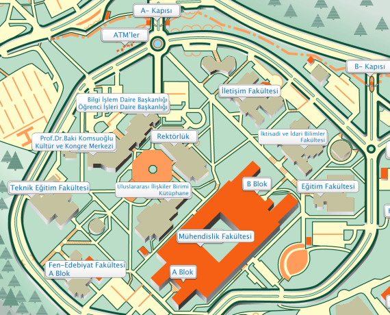

| |
UMUTTEPE YERLEŞKESİ
Umuttepe Yerleşkesi, 1999 depremi sonrası zarar gören veya yıkılan yerleşkelerin yerine Kocaeli Üniversitesi tarafından Üç Tepeler mahaline yaptırılan yerleşkedir. 2004 senesinde eğitime açılmıştır.2006 yılında ise mühendislik fakültesi hariç bütün lisans eğitimi veren fakülteler bu yerleşkeye taşınmıştır. Kocaeli Üniversitesi Araştırma Hastanesi bu yerleşkenin içinde yer almakta olup bölgenin en gelişmiş eğitim, araştırma ve hizmet hastanesidir. Yerleşke beş yıl içinde mükemmel bir eğitim kampusü olmuş ve Mühendislik Fakültesi de tümüyle taşınmıştır.2012 yılı itibariyle Merkez Anıtpark Kampüsünde bulunan Yabancı Dil Hazırlık bölümü de Umuttepe kampüsüne taşınmıştır.

|